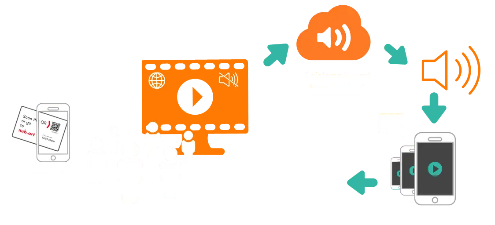

Video e audio accoppiati in sincrono via internet

Qualcuno guarda un video muto in una vetrina, in un museo o in qualsiasi altro luogo pubblico
Scansiona un codice QR con il suo cellulare e accede immediatamente al suono perfettamente sincronizzato nella lingua di sua scelta.
Questo è Nubart SYNC: un servizio web che aggiunge audio multilingue a qualsiasi schermo video muto. Trasmette l'audio di ogni video sullo smartphone dei tuoi visitatori mantenendolo sincronizzato con ciò che appare sullo schermo — senza app, senza cuffie e senza hardware dedicato.
L'audio verrà trasmesso loro in perfetta sincronia, senza alcuna latenza percepibile.
La nostra soluzione brevettata non richiede alcuna attrezzatura speciale o sistemi tecnici complessi come la trasmissione, i beacon, i router personalizzati, dispositivi a radiofrequenza o gli infrarossi. Tutto ciò di cui il vostro video e il vostro pubblico avrà bisogno è una normale connessione a Internet (WIFI o dati mobili).
Nubart SYNC è completamente scalabile: adatto a qualsiasi numero di ascoltatori. E' possibile il looping e la lunghezza del video è irrilevante. Adatto anche per pareti video a mosaico.
Demo per testare Nubart SYNC
Prova la nostra demo
Riproduci il video qui
In questa demo, il video viene trasmesso in streaming. Nella tua struttura, il video verrà riprodotto a schermo intero da un file video locale.

Scansiona questo codice QR con uno smartphone

Seleziona una lingua

Ascolta la traccia audio
Puoi cambiare la lingua cliccando sull'icona.
Demo per testare Nubart SYNC
Apri questa pagina su un PC per provare la nostra demo
Per testare la nostra demo, avrai bisogno di due dispositivi: uno per aprire il video e uno per riprodurre la traccia audio sincronizzata. Poiché stai visualizzando il nostro sito web su uno smartphone, queste condizioni potrebbero non essere soddisfatte. Ti invitiamo ad aprire questa pagina su un dispositivo più grande (PC o tablet) per provare la nostra demo.
Video multilingue negli spazi pubblici
Perché Nubart SYNC?
Con Nubart SYNC, anche gli schermi video muti possono parlare.
Lo spazio pubblico è pieno di video: video pubblicitari su cartelloni e vetrine, informazioni sulla sicurezza negli aeroporti, film educativi nelle sale d'attesa... Ma le regole di sicurezza e di convivenza richiedono che questi video siano silenziosi.
Questi video potrebbero rafforzare in modo significativo il loro messaggio se fosse possibile trasmettere l'audio ai telefoni cellulari degli spettatori.
Finora questo obiettivo poteva essere raggiunto solo con complessi sistemi di integrazione AV e hardware speciali.
Con Nubart SYNC, è possibile aggiungere il suono ai video negli spazi pubblici senza disturbare i passanti. Basta posizionare il nostro codice QR accanto allo schermo o incorporarlo nel video stesso.
Puoi provarlo subito con la nostra demo.

Cosa c'è attualmente sul mercato per l'accoppiamento audio e video?
Cosa rende Nubart SYNC migliore delle soluzioni convenzionali
Soluzioni attuali
Oggi è ancora necessario un hardware complesso per sincronizzare l'audio e il video se vengono trasmessi da dispositivi diversi: lettori video speciali, sistemi di attivazione RF, RFID o infrarossi, i-beacon, ecc.
Alcune aziende offrono la trasmissione Wifi, ma solo attraverso un portale vincolato, a volte in combinazione con un'app.
Cosa rende migliore Nubart SYNC
Il valore di Nubart SYNC sta nella sua rivoluzionaria semplicità.
Per la prima volta, una fonte audio multilingue in perfetta sincronia labiale con un video pubblico può essere trasmessa spontaneamente e facilmente a qualsiasi passante tramite un semplice codice QR.
La colonna sonora sincronizzata si apre semplicemente nel browser dell'utente.
Cosa significa?
Nubart SYNC è una soluzione SaaS conveniente che ha il potenziale per rivoluzionare il mondo del digital signage, del DOOH, della pubblicità e dell'accessibilità.
Il nostro prodotto innovativo è protetto da brevetti nei più importanti mercati mondiali.
Statistiche per i tuoi schermi video pubblici
Ottieni informazioni su chi sta guardando il tuo video

Raccogli i dati dei visitatori senza fatica e nel rispetto della privacy
Con Nubart SYNC puoi scoprire chi interagisce con i tuoi video e annunci video negli spazi pubblici. A differenza dei metodi tradizionali come le telecamere o gli infrarossi, Nubart SYNC offre informazioni affidabili sull'effettivo interesse e comportamento degli utenti nei tuoi video e ti fornisce dati preziosi per prendere decisioni strategiche.
Nubart SYNC raccoglie dati aggregati sull'uso e sul comportamento dagli smartphone degli utenti in modo anonimo, senza cookie di terze parti o violazioni della privacy.
Avrai accesso a un'area clienti che ti fornirà informazioni essenziali, come ad esempio
- Paese di origine dell'utente
- Lingua madre dell'utente
- Utenti al giorno e all'ora
Puoi anche aggiungere un modulo di feedback per porre domande specifiche.
Guarda le statistiche di Nubart SYNC in azioneCasi d'uso compatibili con Nubart SYNC
Nubart SYNC è adatto per

Musei
- Video didattici
- Installazioni video
(Meglio se in combinazione con l'audioguida PWA di Nubart)

Pubblicità
- Espositori pubblicitari
- Pubblicità fuori casa (DOOH)
- Sale espositive

Accessibilità
- Descrizione audio
- Lingua facile
- Disturbi dell'udito

Fiere e mostre
Audio per video esplicativi di prodotti complessi su stand.

Cinema
- Streaming multilingue simultaneo
- Festival del cinema di strada
- Cinema all'aperto o drive-in

Sale d'attesa
- Immigrazione
- Ospedale
- Amministrazioni

Aeroporti
- Istruzioni di sicurezza
- Intrattenimento nelle aree di attesa

Proiezione o mappatura su edifici
Il pubblico può ascoltare la musica sincronizzata o una spiegazione direttamente sul proprio smartphone.

E molti altri
Sicuramente ci sono applicazioni per Nubart SYNC a cui non abbiamo ancora pensato, segnalacele!
Nubart SYNC - Diagramma schematico
Come funziona Nubart SYNC

Sistemi di riproduzione video supportati da Nubart SYNC
Opzioni di lettore video supportate:
Qualsiasi schermo o lettore con una connessione a Internet
Se il tuo dispositivo è in grado di aprire un browser moderno e dispone di una connessione internet, dovrebbe essere compatibile con Nubart SYNC.
BrightSign
Compatibile con i lettori video BrightSign abilitati a Internet, come l'HD224. Compatibile con il software di segnaletica digitale BrightAuthor.
Micromappatura e altre soluzioni AV
Se il tuo dispositivo dispone di una connessione internet, puoi integrare la nostra API nel tuo sistema di riproduzione personalizzato. Scrivici.
Sistemi di riproduzione audio compatibili con Nubart SYNC
Opzioni di lettore audio supportate:
Qualsiasi smartphone
Le colonne sonore di Nubart SYNC si aprono in un browser, quindi qualsiasi smartphone con un browser e la capacità di scansionare un codice QR è supportato. Non è necessario scaricare un'applicazione.
Prezzi e calcolatore dei costi
Stima il costo di Nubart SYNC in pochi secondi
Piano standard
- Lingue illimitate per video
- Fino a 2 ore di consulenza durante la riproduzione
- Account cliente con statistiche di utilizzo
- 25 €/mese (275 €/anno) per video aggiuntivo
Prezzi IVA esclusa · permanenza minima di 5 mesi · Termini
Il tuo costo SYNC
Calcolalo in pochi secondi
Passaggio 1 di 4
Per quanti video ti serve l'audio?
Passaggio 2 di 4
Si tratta di una mostra temporanea o di un'installazione permanente?
Questo determina se calcoliamo un totale fisso per la durata, oppure un abbonamento continuativo.
Passaggio 3 di 4
Questo audio sarà integrato anche in un'audioguida PWA di Nubart?
Passaggio 4 di 4
La tua stima
La tua richiesta di preventivo è pronta
Copia il testo qui sotto e incollalo nel tuo client di posta, oppure usa il pulsante "Apri nell'app Mail" se ne hai una configurata.
Domande frequenti
Domande frequenti su Nubart SYNC
Puoi scaricarle in PDF qui:
Scarica le nostre istruzioni per BrightSign
La larghezza di banda richiesta per il segnale di sincronizzazione è molto bassa.
Clienti che utilizzano Nubart SYNC
Clienti di Nubart SYNC (Selezione)

ArtDidactics (Spagna)
Mostra immersiva "Dalí Challenge

Formato WerbeArt (Germania)
Stand espositivo

Museo Koge (Danimarca)
Video didattici

Musea Brugge (Belgio)
Video esplicativi in loco

Centro del Castello Danese (Danimarca)
Video esplicativi in loco

Centro visitatori di Cesarea (Israele)
Audioguida accessibile per le persone con disabilità visive e cognitive